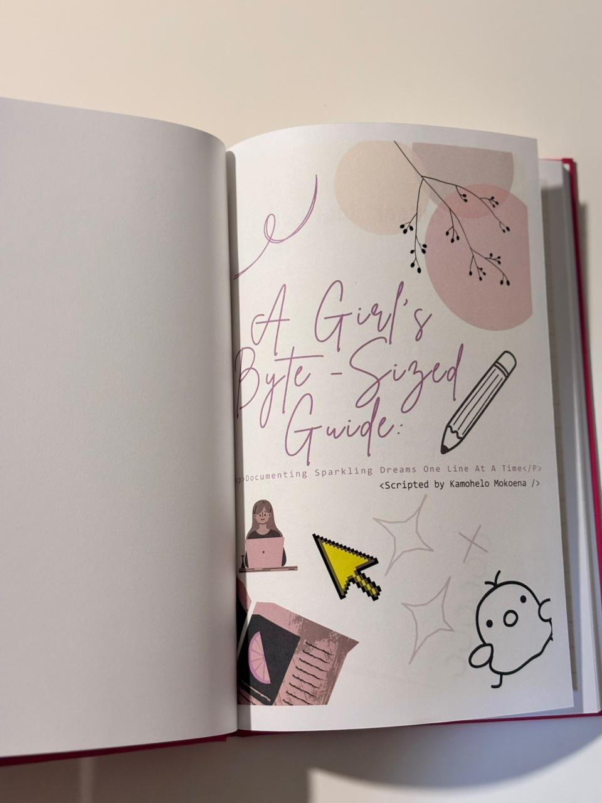
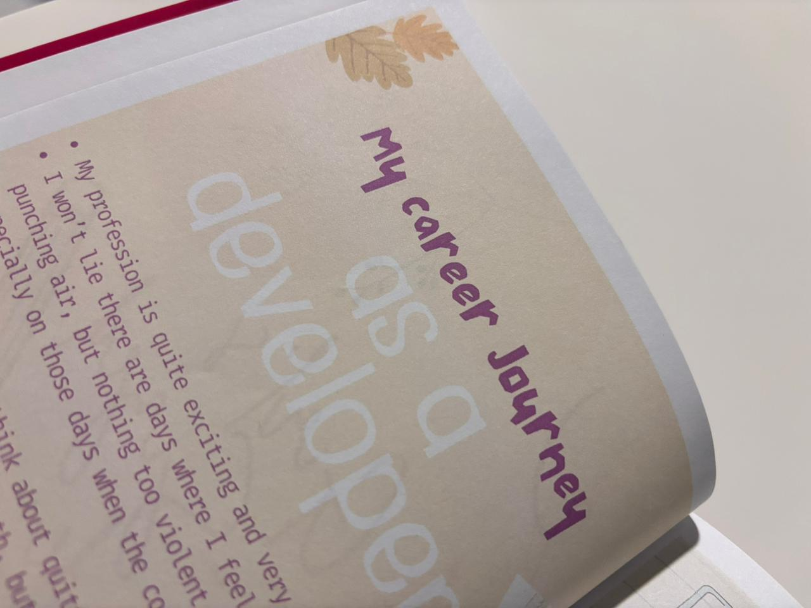
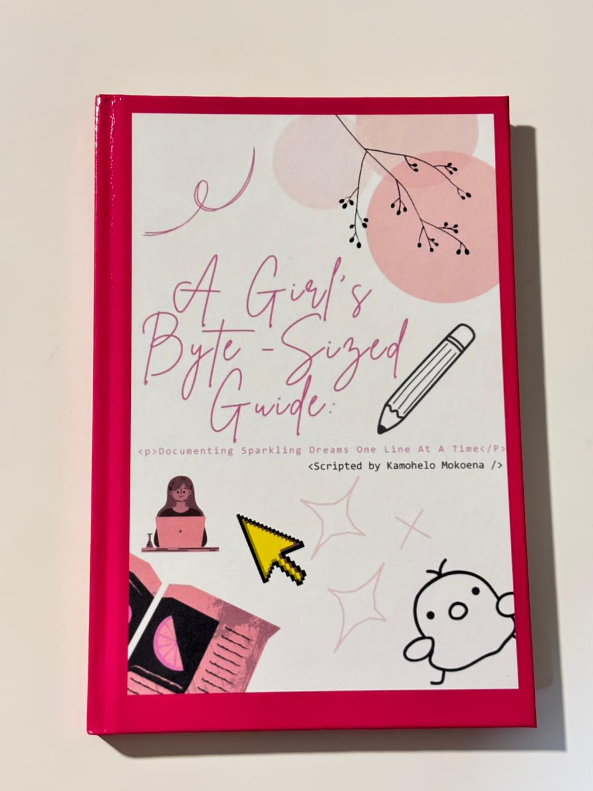
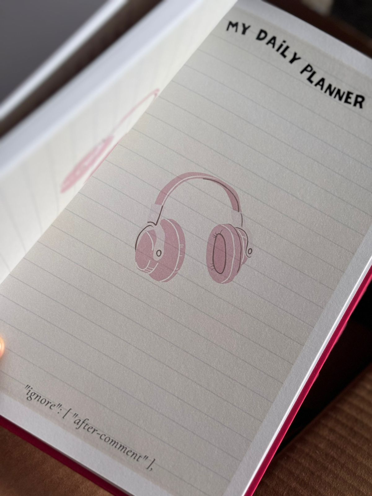

Front View
A creative design to inspire daily reflection.
Reflect. Code. Grow. A hardcover journal designed for software developers who want to learn with purpose.
🛒 Get Your CopyI wanted a structured way to track my coding progress — not just the code I wrote, but what I learned along the way. This journal helps developers slow down, reflect, and build stronger problem-solving habits.
Random Code Snippets on the footer for Inspiration
Beautiful graphics to stimulate the creative writing
Plenty of space for notes and ideas
30-day pages for everyday reflection

A creative design to inspire daily reflection.

Tiny little bits on Author's thoughts.

A beautiful hardcover journal for your thoughts.
Structured layouts for tracking progress and notes.

Cool graphics to inspire your writing.
Hey, I'm Kamohelo Mokoena — a software developer passionate about learning, reflection, and productivity. I built this journal because growth as a developer isn’t just about writing code — it’s about thinking deeply about how we learn and build.